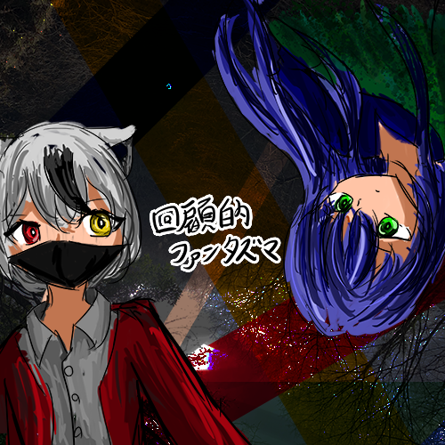

回顧的ファンタズマ
Recollectional Phantasma

project史縫1周年を記念した音楽集。既存の楽曲や書き下ろし楽曲など、計15曲を収録。
I II IIII IIII V VI VII VIII IX X XI XII XIII XIII XV XVI XVII XVIII XIX XX XI XII XIII XIIII XXV XXVI
I.未知の高原 ～ invisible path
Comporser : AmeAgari風斗
project史縫テーマ曲です。ピアノやストリングスなどを織り交ぜたproject史縫らしい曲になったかと思います。
II.春を駆ける (EYE.gley-x REMIX)
Comporser : AmeAgari風斗 Rimix : EYE.gley-x
砕片記憶より。既存のメロディを少しいじっただけのリミックスですが。それはそれでアリかも？
III.見上げた空には
Comporser : AmeAgari風斗
哀色風景より。ピアノとシンセが合わさった不思議な曲です。
IIII.最終列車、死の果てに
Comporser : AmeAgari風斗
砕片記憶より。死をテーマに作った曲です。病室で亡くなった人のことをじっと見ているような。そんな曲です。
V.解離性Noise (clear ver)
Comporser : EYE.gley-x
史縫 劣等哀感より石鎚崎解のテーマ曲。 解の性格に合わせたなんとも不思議な曲です。 ちなみに途中で聞こえる「kick」は自分の声をサンプリングしたやつです。
VI.Enectronical Escape
Comporser : AmeAgari風斗
Twitterより。自分が初めてシンセオンリーで作った曲です。今でも思うけれど中毒性が高い。
VII.SPACE AND SPACE!!!
Comporser : EYE.gley-x
史縫 拡張界域より天風兄妹のテーマ曲。 声ネタ（？）マシマシの曲を作りたくて作った記憶があります。ｶﾞﾁｬｶﾞﾁｬ
VIII.照らされた本棚
Comporser : AmeAgari風斗
書き下ろし楽曲。ピアノと鉄琴鳴らしとけばなんとかなるやろと思って作った曲。
IX.Affection Over
Comporser : EYE.gley-x
史縫 悲涙愁色より蒼風院香のテーマ曲。Dominoで作曲していた頃の曲ですね。懐かしい。同じメロディが繰り返し流れていく、そんな香のような曲です。
X.暁月帰航 ～ Clear Moon
Comporser : AmeAgari風斗
史縫 輝月渡航より神咲狐々のテーマ曲。夜明けの空気感をイメージして作りました。だんだんと朝日が昇っていっているように感じる曲。
XI.哀色逃避 ～ Unclear Crescent Moon
Comporser : AmeAgari風斗
史縫 劣等哀感より狼月のテーマ曲。曲自体は暁月帰航 ～ Clear Moonの構成とほぼ同じですが、和風のテイストでアレンジしました。狼月が立ち上がって進んでいくような、そんな曲です。
XII.ElEctrOnIc spIrIt -And-sAy-(ReLife ver)
Comporser : EYE.gley-x
史縫 悪霊幽界より御崎香蓮のテーマ曲。幽霊とは電子的な存在だ。っていうことをどっかで聞いたことがあって、電子的な曲に仕上げました。生き返ったヴァージョンです。
XIII.混乱-疾駆 (EYE.gley-x REMIX)
Comporser : AmeAgari風斗 Rimix : EYE.gley-x
史縫 劣等哀感より。駆け巡るような曲をどこぞの音ゲー（？）みたいな感じにしました。許してくれ。
XIIII.chronomianizm
Comporser : AmeAgari風斗 vs EYE.gley-x
書き下ろし楽曲。不安定なドラムと発狂ピアノなどをまぜこぜにしました。これぞファンタズマゴリミック。
XV. 過去を忘れた者、過去を背負う者
Comporser : AmeAgari風斗 vs EYE.gley-x
書き下ろし楽曲。静かな世界をイメージして作った曲。実質水夜岐と狼月の2人のテーマ曲かな。
◆AmeAgari風斗◆
お手に取っていただきありがとうございます。午後26時の天球儀主宰のAmeAgari風斗です。project史縫1周年ということで、既存の楽曲や書き下ろし楽曲などを織り交ぜた音楽集を制作しました。まだproject史縫は1年しか経っていない未熟な存在。それは僕もそうです。弾幕STGから始まり、今は弾幕STG風創作、小説、音楽集などいろいろなことをおこなってきました。今まで応援してくださった方々に感謝を申し上げると共に、これからも応援の程よろしくお願いいたします。
◆EYE.glay-x◆
こんにちは。今回はproject史縫1周年記念音楽集に参加できて光栄に思います。クオリティが低いとか言わないでね（笑）
This Music Collection is for the First Anniversary of projectSHIHOU.